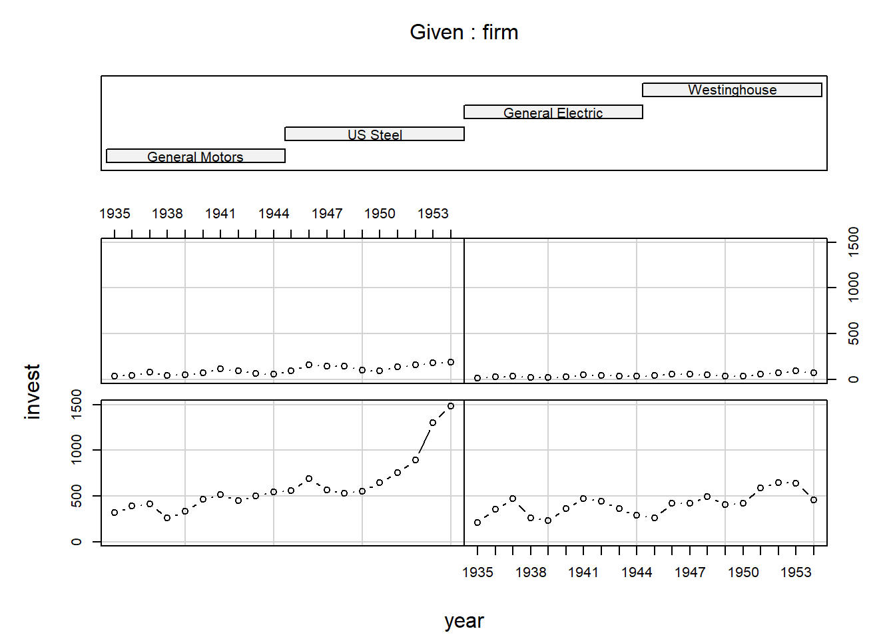

Capítulo 5 Regressão com Dados em Painel
Felipe Micail da Silva Smolski
O modelo de regressão com dados em painel possui uma característica especial: se constitui de uma dimensão temporal e outra espacial. Isto porque a mesma unidade de corte transversal (família, países, etc.) é acompanhada ao longo do tempo. Por exemplo, a produção industrial mensal dos Estados brasileiros em função da taxa de juros no período de 2015-2016. Têm-se então a 624 (26x24) observações combinadas: de cada um dos 26 Estados (exluindo o Distrito Federal) e 24 observações para os meses.
Dentre os benefícios da regressão com dados em painel (Gujarati e Porter 2011):
Devido à heterogeneidade da análise entre indivíduos, empresas, estados, países, etc., esta técnica pode levar em conta estas variáveis individuais específicas;
Maior informação, maior variabilidade e menor colinearidade entre variáveis, devido à combinaçãod e séries temporais e dados com corte transversal;
Dados em painel são mais adequados ao estudo da dinâmica da mudança (emprego, renda, etc).
Detecta e mede melhor os efeitos em comparação aos estudos transversais puros ou em séries temporais puras;
Possibilidade de modelos comportamentais mais complexos;
Minimização do viés decorrente da agregação de pessoas e/ou empresas nos grandes conjuntos.
5.1 Carregamento e transformação dos dados
A base de dados utilizada neste exemplo (“Grunfeld”) é proveniente do pacote AER. É constituída da variável dependente do nível de investimento (“invest”) de diversas empresas (“firm”), bem como das variáveis explicativas de seu valor de mercado (“value”) e do valor do estoque de capital (“capital”) durante o período de 1935-1954 (20 anos). Portanto pretende-se descobrir os determinantes do valor do nível investimento das firmas durente o período.
require(AER)
data(Grunfeld, package="AER")Após carregada a base para o estudo, serão selecionadas quatro empresas (“General Electric”, “General Motors”, “US Steel” e “Westinghouse”) para fins de análise dos dados. Utiliza-se o pacote plm e a função pdata.frame para alocar a base de dados para a análise de regressão de dados em painel, uma vez que é necessário definir o atributo individual (“firm”) e temporal (“year”) das observações. Para isso utiliza-se o argumento index, como segue:
require(plm)
Grunfeld=subset(Grunfeld, firm %in% c("General Electric",
"General Motors",
"US Steel",
"Westinghouse"))
Grunfeld=pdata.frame(Grunfeld, index=c("firm","year"))
head(Grunfeld) invest value capital firm year
General Motors-1935 317.6 3078 2.8 General Motors 1935
General Motors-1936 391.8 4662 52.6 General Motors 1936
General Motors-1937 410.6 5387 156.9 General Motors 1937
General Motors-1938 257.7 2792 209.2 General Motors 1938
General Motors-1939 330.8 4313 203.4 General Motors 1939
General Motors-1940 461.2 4644 207.2 General Motors 1940summary(Grunfeld) invest value capital firm
Min. : 12.9 Min. : 192 Min. : 0.8 General Motors :20
1st Qu.: 55.3 1st Qu.:1192 1st Qu.: 118.1 US Steel :20
Median : 199.8 Median :1971 Median : 254.7 General Electric:20
Mean : 290.9 Mean :2229 Mean : 357.3 Westinghouse :20
3rd Qu.: 459.8 3rd Qu.:2795 3rd Qu.: 368.9
Max. :1486.7 Max. :6242 Max. :2226.3
year
1935 : 4
1936 : 4
1937 : 4
1938 : 4
1939 : 4
1940 : 4
(Other):56 Nota-se que nesta base que será trabalhada os dados das empresas aparecem “empilhados”, uma vez que a variável referente ao ano da observação (“year”) está repetida para cada observação da referida empresa (corte transversal repetido em diversos períodos de tempo). Desta forma a nossa base de dados possui igualmente 20 informações para cada empresa, se constituindo em um painel equilibrado. Caso o número de informações para cada empresa fossem desiguais, teríamos um painel desequilibrado.
Uma questão interessante emerge para a análise de regressão de dados em painel, em virtude da interação de variáveis individuais (“firm”) com a série temporal (“year”): a elevação da complexidade da análise. Desta forma, várias possibilidades de análise de modelos de regressão surgem, dentre elas:
regressão considerando que o intercepto do modelo e seus coeficientes angulares são constantes ao londo do tempo e no espaço, sendo que o termo de erro capta a diferença no tempo e entre os indivíduos (POOLED);
regressão considerando que os coeficientes angulares são constantes e o intercepto varia entre os indivíduos (EFEITOS FIXOS);
regressão considerando que o intercepto assume um valor médio comum entre os indivíduos e os coeficientes angulares variam ao longo do tempo e também entre indivíduos (EFEITOS ALEATÓRIOS).
Abaixo é demonstrada a evolução do investimento de acordo com cada empresa estudada:
coplot(invest ~ year|firm, type="b", data=Grunfeld)
5.2 Modelo Pooled
Este modelo trata de “empilhar” todas as observações da base de dados, ignorando a estrutura de dados em painel. Desta forma, todas as observações são tratadas como não correlacionadas para os indivíduos, com erros homoscedásticos para com os indivíduos. Trata-se, portanto, da forma mais simplista e ingênua pois desconsidera as dimensões de tempo e espaço combinados, ao mesmo tempo que estima a regressão pelo método dos Mínimos Quadrados Ordinários (MQO) (Gujarati e Porter 2011). Desta forma:
\[ \begin{matrix} Y_{it} = \beta_1+\beta_2X_{2it} + \beta_3X_{3it} +u_{it}\\ i=1,2,3,4\\ t=1,2,\dots,20 \end{matrix} \]
em que \(i\) corresponde à \(i\)-nésima unidade de corte transversal e \(t\) o \(t\)-nésimo período de tempo.
Para executar este modelo de regressão é necessário utilizar a função plm, juntamente com as variáveis dependente e independentes, indicando a base de dados (data) e o tipo da regressão ("pooling").
reg.pooled=plm(invest~value+capital,
data=Grunfeld, model="pooling")
summary(reg.pooled)Pooling Model
Call:
plm(formula = invest ~ value + capital, data = Grunfeld, model = "pooling")
Balanced Panel: n = 4, T = 20, N = 80
Residuals:
Min. 1st Qu. Median 3rd Qu. Max.
-319.68 -99.95 1.96 65.99 336.21
Coefficients:
Estimate Std. Error t-value Pr(>|t|)
(Intercept) -62.8318 29.7254 -2.11 0.038 *
value 0.1105 0.0138 8.02 9.2e-12 ***
capital 0.3005 0.0494 6.08 4.3e-08 ***
---
Signif. codes: 0 '***' 0.001 '**' 0.01 '*' 0.05 '.' 0.1 ' ' 1
Total Sum of Squares: 6410000
Residual Sum of Squares: 1570000
R-Squared: 0.755
Adj. R-Squared: 0.748
F-statistic: 118.424 on 2 and 77 DF, p-value: <2e-16A estimação da regressão pooled averiguou alta significância estatística nas variáveis dependentes (“value” e “capital”), indicando sinal positivo para os coeficientes (em consonância com a literatura), bem como um valor de R\(^2\) alto. Este tipo de modelo não faz diferenciação entre a influência/diferença das empresas na variável investimento e nem se a resposta do investimento às variáveis explicativas é a mesma ao longo do tempo. Isto faz com que não se saiba se existe heterogeneidade entre as empresas. A comparação do modelo pooled com as regressões de efeitos fixos e efeitos aleatórios, que serão estimados na sequência, servirá mostrar ao pesquisador qual é o melhor modelo dentre eles.
5.3 Modelo Efeitos Fixos
O modelo de regressão com efeitos fixos considera, como visto anteriormente, que os valores dos interceptos para cada regressão (\(\alpha_i\)) variam de acordo com o efeito de cada indivíduo (“firma”) e que os coeficientes de declividade (das variáveis independentes “value” e “capital”) para cada equação são os mesmos para cada empresa, conforme equação abaixo:
\[ invest_{it} = value_{1it} + capital_{2it} + \alpha_i + \varepsilon_{it} \] em que \(i=1,...,4\), \(t=1,...,20\) (painel balanceado).
Desta forma, o intercepto da equação é diferente para cada empresa, mas o efeito das variáveis independentes é o mesmo sobre a variável independente. Isto indica que existe características especiais em cada empresa influenciando o investimento, como por exemplo o estilo de gestão (Gujarati e Porter 2011).
Abaixo é montada a regressão de efeitos fixos:
reg.ef=plm(invest~value+capital,
data=Grunfeld, model="within")
summary(reg.ef)Oneway (individual) effect Within Model
Call:
plm(formula = invest ~ value + capital, data = Grunfeld, model = "within")
Balanced Panel: n = 4, T = 20, N = 80
Residuals:
Min. 1st Qu. Median 3rd Qu. Max.
-184.66 -48.26 9.33 40.55 197.67
Coefficients:
Estimate Std. Error t-value Pr(>|t|)
value 0.1084 0.0176 6.17 3.3e-08 ***
capital 0.3451 0.0267 12.92 < 2e-16 ***
---
Signif. codes: 0 '***' 0.001 '**' 0.01 '*' 0.05 '.' 0.1 ' ' 1
Total Sum of Squares: 2170000
Residual Sum of Squares: 422000
R-Squared: 0.806
Adj. R-Squared: 0.792
F-statistic: 153.291 on 2 and 74 DF, p-value: <2e-16Nota-se que o impacto do valor da empresa (“value”) e do capital (“capital”) é positivo sobre o investimento (“invest”), para todas as empresas como visto acima. Inclusive, há significância estatística para estas variáveis. No entanto, ainda resta definir o efeito dos interceptos de cada empresa, como segue:
summary(fixef(reg.ef)) Estimate Std. Error t-value Pr(>|t|)
General Motors -85.5 73.5 -1.16 0.2483
US Steel 95.0 36.7 2.59 0.0115 *
General Electric -246.2 35.9 -6.85 1.9e-09 ***
Westinghouse -59.4 20.2 -2.94 0.0044 **
---
Signif. codes: 0 '***' 0.001 '**' 0.01 '*' 0.05 '.' 0.1 ' ' 1Com este resultado é possível observar que o efeito das firmas sobre o investimento parece ser diferente para cada indivíduo. Desta forma, somente a empresa US Steel consta com efeito positivo sobre o investimento. Por outo lado, a fórmula da regressão é apresentada de maneira diversa, por exemplo: \(invest = -85,515 + 0,108400value + 0,345058capital\) para a regressão considerando a General Motors; \(invest = 94.988 + 0,108400value + 0,345058capital\) considerando a firma US Steel e assim por diante.
Outra forma de visualizar a equação de efeitos fixos é utilizando a função lm para definir a regressão, definindo a variável “firm” como um fator:
summary(lm(invest~value+capital+as.factor(firm),
data=Grunfeld))
Call:
lm(formula = invest ~ value + capital + as.factor(firm), data = Grunfeld)
Residuals:
Min 1Q Median 3Q Max
-184.66 -48.26 9.33 40.55 197.67
Coefficients:
Estimate Std. Error t value Pr(>|t|)
(Intercept) -85.5153 73.4898 -1.16 0.24831
value 0.1084 0.0176 6.17 3.3e-08 ***
capital 0.3451 0.0267 12.92 < 2e-16 ***
as.factor(firm)US Steel 180.5029 45.7168 3.95 0.00018 ***
as.factor(firm)General Electric -160.7122 46.6224 -3.45 0.00094 ***
as.factor(firm)Westinghouse 26.1296 64.9435 0.40 0.68859
---
Signif. codes: 0 '***' 0.001 '**' 0.01 '*' 0.05 '.' 0.1 ' ' 1
Residual standard error: 75.5 on 74 degrees of freedom
Multiple R-squared: 0.934, Adjusted R-squared: 0.93
F-statistic: 210 on 5 and 74 DF, p-value: <2e-16Note que o intercepto definido (-85,51533) refere-se à presença da empresa General Motors. Caso seja evidenciada a presença da empresa US Steel, o valor do intercepto passa para 94,988 (= -85,51533 + 180,50295), a mesma lógica vale para as demais empresas.
5.4 Modelo Efeitos Aleatórios
No modelo de regressão com efeitos aleatórios, os efeitos individuais das firmas (“firms”) são considerados variáveis aleatórias, ao contrário do modelo visto anteriormente. Desta forma:
\[ Y_{1i}=\beta_{1i}+\beta_2X_{2it}+\beta_3X_{3it}+u_{it} \]
onde \(\beta_{1i}\) é variável aleatória com valor médio \(\beta_1\), e o intercepto para a empresa individual é dado por (Gujarati e Porter 2011):
\[ \beta_{1i} = \beta_{1}+\varepsilon_{i} \quad i=1,2,\dots,N \] em que \(\varepsilon_{i}\) é um termo de erro de média zero e variânvia \(\sigma^{2}_{\varepsilon}\). Assim, as empresas possuem um valor médio para o intercepto (=\(\beta_1\)), sendo que as diferenças refletem o termo de erro \(\varepsilon_i\). Obtêm-se:
\[ \begin{matrix} Y_{it}=\beta_1+\beta_2X_{2it}+\beta_3X_{3it}+ w_{it}\\ w_{it}=\varepsilon_i+u_{it} \end{matrix} \]
O erro composto \(w_{it}\) é formado por \(\varepsilon_i\) - elemento de corte transversal dos indivíduos e \(u_{it}\), que é o elemento da série temporal e do corte transversal (Gujarati e Porter 2011). Desta forma, assume-se que os erros individuais não estão correlacionados entre si e também não estão correlacionados entre aquelas unidades de corte transversal e das séries temporais.
A montagem deste tipo de regressão é feita através da função plm, incluindo como modelo “random” e como método “walhus”, como segue:
reg.ea=plm(invest~value+capital,
data=Grunfeld, model="random",
random.method = "walhus")
summary(reg.ea)Oneway (individual) effect Random Effect Model
(Wallace-Hussain's transformation)
Call:
plm(formula = invest ~ value + capital, data = Grunfeld, model = "random",
random.method = "walhus")
Balanced Panel: n = 4, T = 20, N = 80
Effects:
var std.dev share
idiosyncratic 5786.5 76.1 0.29
individual 13872.6 117.8 0.71
theta: 0.857
Residuals:
Min. 1st Qu. Median 3rd Qu. Max.
-193.89 -46.17 1.35 41.98 198.11
Coefficients:
Estimate Std. Error z-value Pr(>|z|)
(Intercept) -72.6322 68.9083 -1.05 0.29
value 0.1079 0.0167 6.48 9.3e-11 ***
capital 0.3443 0.0269 12.81 < 2e-16 ***
---
Signif. codes: 0 '***' 0.001 '**' 0.01 '*' 0.05 '.' 0.1 ' ' 1
Total Sum of Squares: 2260000
Residual Sum of Squares: 446000
R-Squared: 0.802
Adj. R-Squared: 0.797
Chisq: 312.731 on 2 DF, p-value: <2e-16Os resultados corroboram com a direção dos sinais para as variáveis dependentes “value” e “capital”, ambos positivos. Por outro lado, os resultados do modelo de efeitos aleatórios trazem os valores sobre a variância dos erros, primeiramente voltado ao componente de corte transversal (específico dos indivíduos) denominado individual, e outro fator idissiossincrático, o qual varia com o tempo e também com o corte transversal, denominado idiosyncratic.
5.5 Comparação e escolha dos modelos
Após a evidenciação dos modelos de regressão dos tipos agrupado (pooled), de efeitos fixos e de efeitos aleatórios, é preciso efetuar os testes para definir qual é o melhor modelo e que por consequência deverá ser considerado.
- Modelo Pooled x Modelo de Efeitos Fixos
Inicialmente compara-se o modelo Pooled com a regressão de Efeitos Fixos (within). Para isto utiliza-se o Teste F ou teste F de Chow. A hipótese nula é de que há igualdade nos interceptos e nas inclinações para todos os indivíduos, caracterizando o modelo de dados agrupados (pooled). A função utilizada é pFtest() do pacote plm.
require(plm)
pFtest(reg.ef,reg.pooled)
F test for individual effects
data: invest ~ value + capital
F = 67, df1 = 3, df2 = 74, p-value <2e-16
alternative hypothesis: significant effectsComo o valor p é inferior a 0,05, o modelo de Efeitos Fixos é melhor do que o modelo Pooled.
- Modelo Pooled x Modelo de Efeitos Aleatórios
O teste desenvolvido por Breusch e Pagan (1980) compara as estimativas entre os modelos, verificando se \(\sigma^{2}_{\alpha} = 0\), sendo que:
\[ \begin{matrix} H_{0}: \sigma^{2}_{\alpha} = 0 \\ H_{1}: \sigma^{2}_{\alpha} \neq 0 \end{matrix} \]
Desta forma, a aceitação da hipótese nula implica que o modelo de dados agrupados (pooled) é preferível. A função plmtest efetua este teste:
plmtest(reg.pooled, type="bp")
Lagrange Multiplier Test - (Breusch-Pagan) for balanced panels
data: invest ~ value + capital
chisq = 380, df = 1, p-value <2e-16
alternative hypothesis: significant effectsComo o p valor foi inferior a 0,05 o modelo de Efeitos Aleatórios é superior ao modelo Pooled.
- Modelo Efeitos Fixos x Modelo de Efeitos Aleatórios
O teste de Hausmann (Hausman 1978) efetua a especificação dos modelos de Efeito Fixo e de Efeitos Aleatórios, sendo que se o teste rejeitar a hipótese nula, o modelo de Efeitos Fixos é o mais adequado.
\[
\begin{matrix}
H_0: \alpha_{i} \text{não são correlacionados com } X_{it} \\
H_1: \alpha_{i} \text{são correlacionados com } X_{it}
\end{matrix}
\]
A função a ser utilizada para este teste é phtest:
phtest(reg.ef,reg.ea)
Hausman Test
data: invest ~ value + capital
chisq = 0.075, df = 2, p-value = 1
alternative hypothesis: one model is inconsistentComo o valor p foi superior a 0,05 o modelo de Efeitos Aleatórios foi considerado superior ao modelo de Efeitos Fixos.
5.6 Alguns testes para os modelos
5.6.1 Testando dependência transversal (cross-sectional)
A dependência cross-sectional se apresenta em panieis com longas séries de tempo. A hipótese nula é de que os resíduos através dos indivíduos não estão correlacionados. Como resultado, nossa regressão aceita a hipótese nula do teste de Pesaran (2015):
pcdtest(reg.ea, test="cd")
Pesaran CD test for cross-sectional dependence in panels
data: invest ~ value + capital
z = 0.31, p-value = 0.8
alternative hypothesis: cross-sectional dependence5.6.2 Normalidade dos resíduos
Segue o já conhecido teste para verificar a normalidade dos resíduos. Como resultado, foi aprovada a hipótese nula (H\(_0\)) de normalidade nos resíduos da regressão.
shapiro.test(reg.ea$residuals)
Shapiro-Wilk normality test
data: reg.ea$residuals
W = 0.99, p-value = 0.95.6.3 Homocedasticidade dos resíduos
Abaixo o teste para homocedasticidade (variância constante) dos resíduos de Breusch-Pagan (1979):
library(lmtest)
bptest(reg.ea)
studentized Breusch-Pagan test
data: reg.ea
BP = 7.6, df = 2, p-value = 0.02Como a hipótese nula é a de que não há homocedasticidade nos resíduos e o p-value foi inferior a 0,05, há problemas nos resíduos da regressão, portanto as veriáveis apresentam problemas de heterocedasticidade. Algumas soluções são possíveis, como a transformação das variáveis.
5.6.4 Testando correlação serial
A hipótese nula do teste de correlação serial do teste Breusch-Godfrey/Wooldridge (Breusch 1978) é a de que não se encontra esta característica na série. Abaixo o resultado do teste, sendo que aprovou a hipótese nula, ou seja, não há problemas de correlação serial nos dados, pois o p-value é superior a 0,05.
# teste Breusch-Godfrey/Wooldridge - EFEITOS ALEATÓRIOS
pbgtest(reg.ea)
Breusch-Godfrey/Wooldridge test for serial correlation in panel models
data: invest ~ value + capital
chisq = 26, df = 20, p-value = 0.2
alternative hypothesis: serial correlation in idiosyncratic errors5.6.5 Teste para efeitos individuais ou de tempo
Pode ser efetuado o teste para verificar a presença de efeitos não observados de tempo ou individuais nos modelos de dados em painel (Wooldridge 2010). A hipótse nula é a não correlação entre os erros do mesmo grupo. Observa-se que para o efeito tempo (“time”) há aceitação da hipótese alternativa, mostrando a correlação entre erros, ao contrário do efeito individual:
# teste Wooldridge - POOLED
pwtest(reg.pooled)
Wooldridge's test for unobserved individual effects
data: formula
z = 1.4, p-value = 0.2
alternative hypothesis: unobserved effectpwtest(reg.pooled, effect = "time")
Wooldridge's test for unobserved time effects
data: formula
z = -3.2, p-value = 0.001
alternative hypothesis: unobserved effect5.6.6 Testando raízes unitárias
O teste de Dickey-Fuller prova se a série é estocástica, sendo que a hipótese nula é de que a série possui raiz unitária (não-estacionaridade). Abaixo o resultado do teste, sendo que observou-se que a série é não estacionária, ou seja, tem problemas para a regressão pois o p-value aprovou a hipótese nula. Desta forma, algumas saídas são possíveis, como a transformação da série ou mesmo a utilização da primeira diferença da série.
require(tseries)Carregando pacotes exigidos: tseriesadf.test(Grunfeld$invest, k=2)
Augmented Dickey-Fuller Test
data: Grunfeld$invest
Dickey-Fuller = -3.4, Lag order = 2, p-value = 0.07
alternative hypothesis: stationaryReferências
Gujarati, Damodar N., e Down C Porter. 2011. Econometria básica. 5a ed. New York: Mc Graw Hill.
Breusch, Trevor Stanley, e Adrian Rodney Pagan. 1980. «The Lagrange multiplier test and its applications to model specification in econometrics». The Review of Economic Studies 47 (1): 239–53.
Hausman, Jerry A. 1978. «Specification tests in econometrics». Econometrica: Journal of the econometric society, 1251–71.
Pesaran, M Hashem. 2015. «Testing weak cross-sectional dependence in large panels». Econometric Reviews 34 (6-10): 1089–1117.
Breusch, Trevor S, e Adrian R Pagan. 1979. «A simple test for heteroscedasticity and random coefficient variation». Econometrica: Journal of the Econometric Society, 1287–94.
Breusch, Trevor S. 1978. «Testing for autocorrelation in dynamic linear models». Australian Economic Papers 17 (31): 334–55.
Wooldridge, Jeffrey M. 2010. Econometric analysis of cross section and panel data. MIT Press.